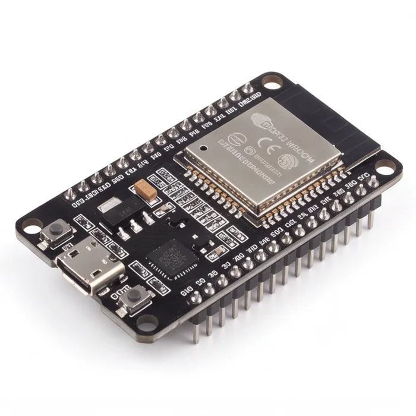
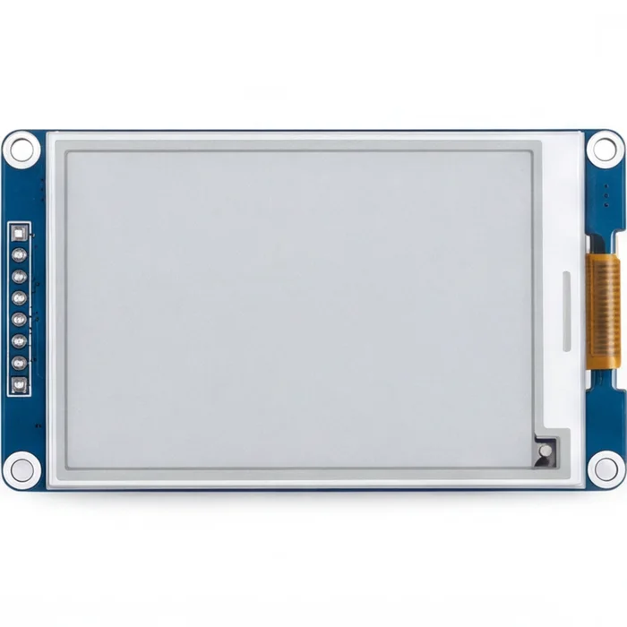
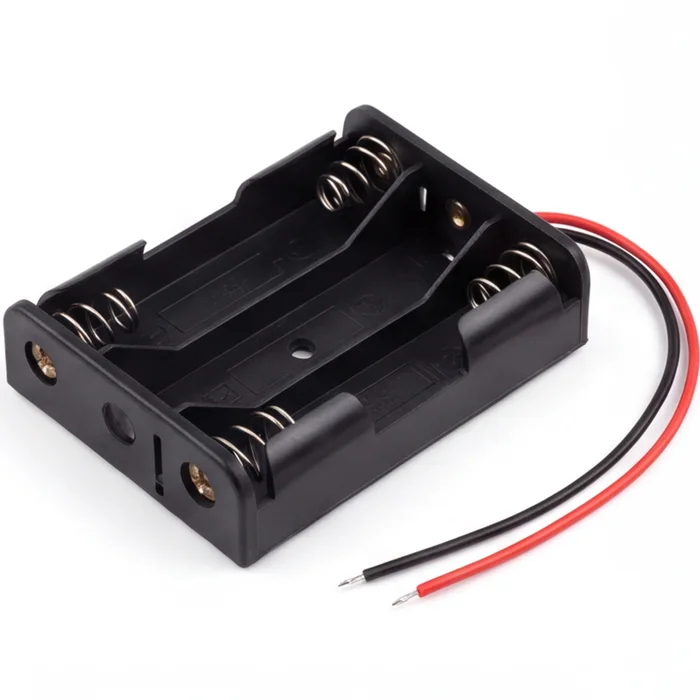
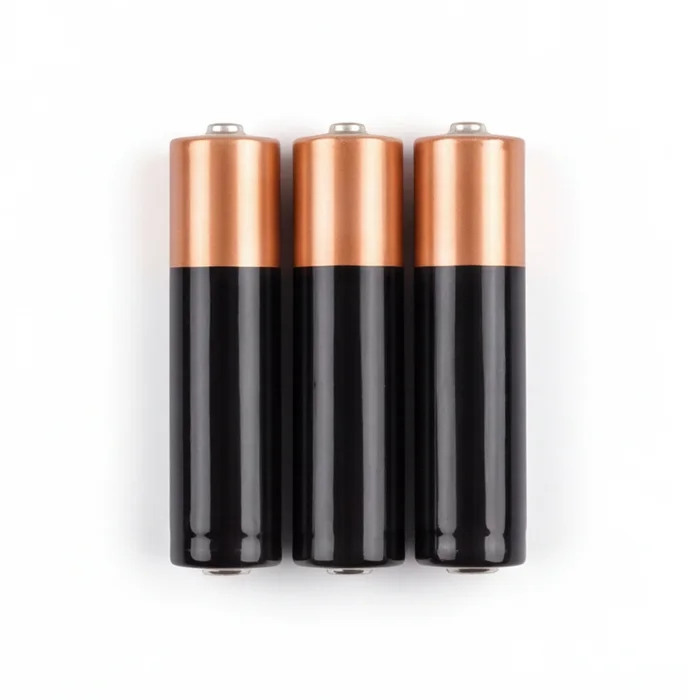
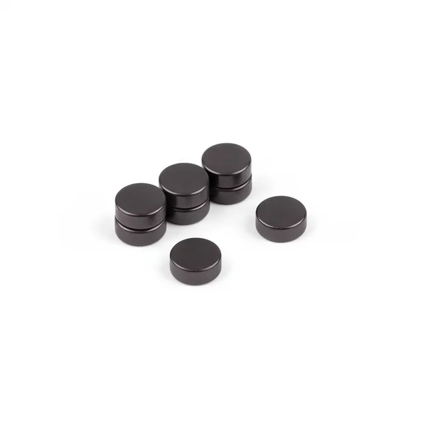
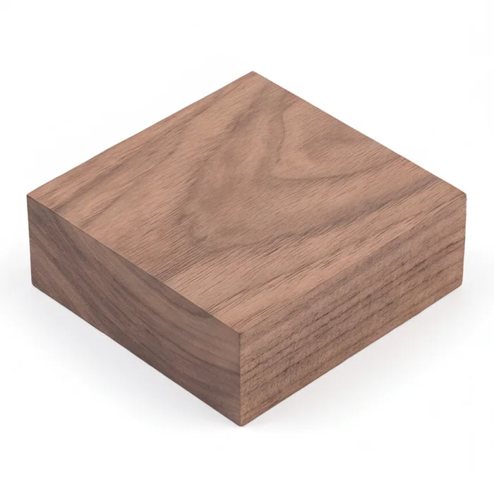
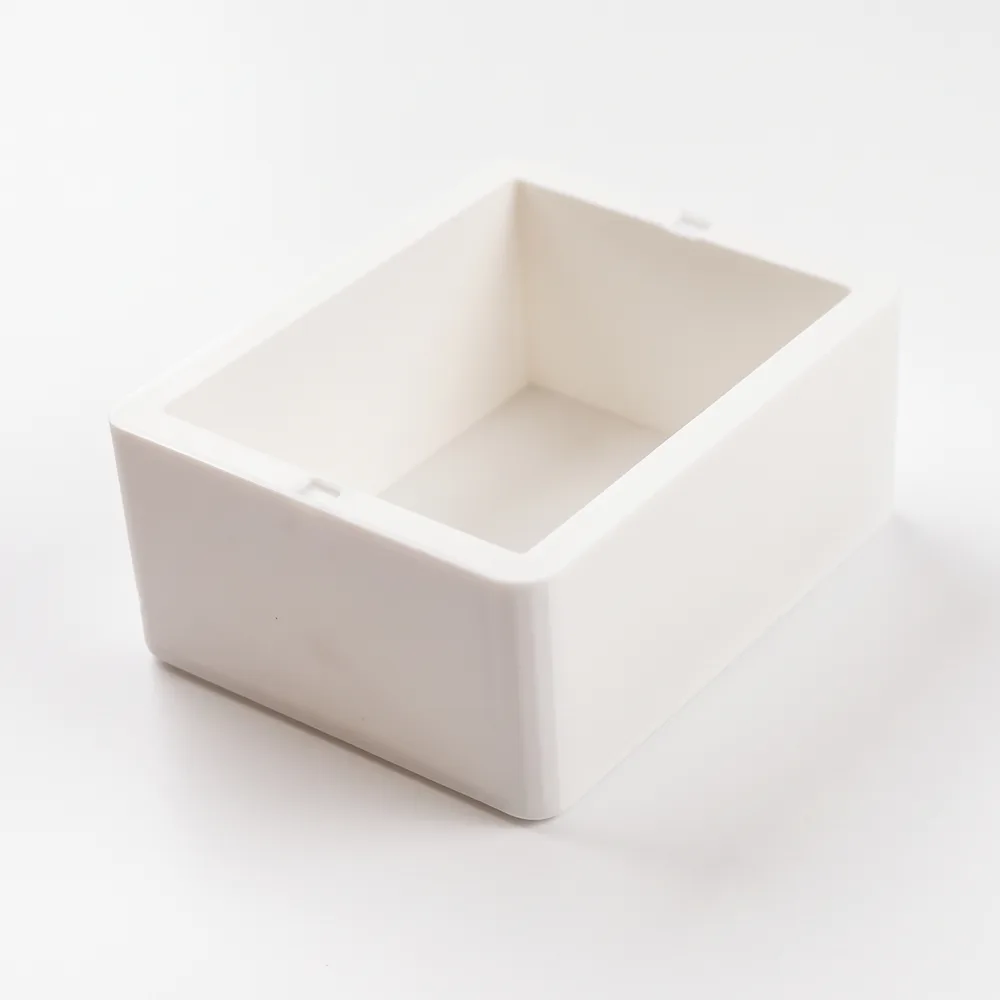
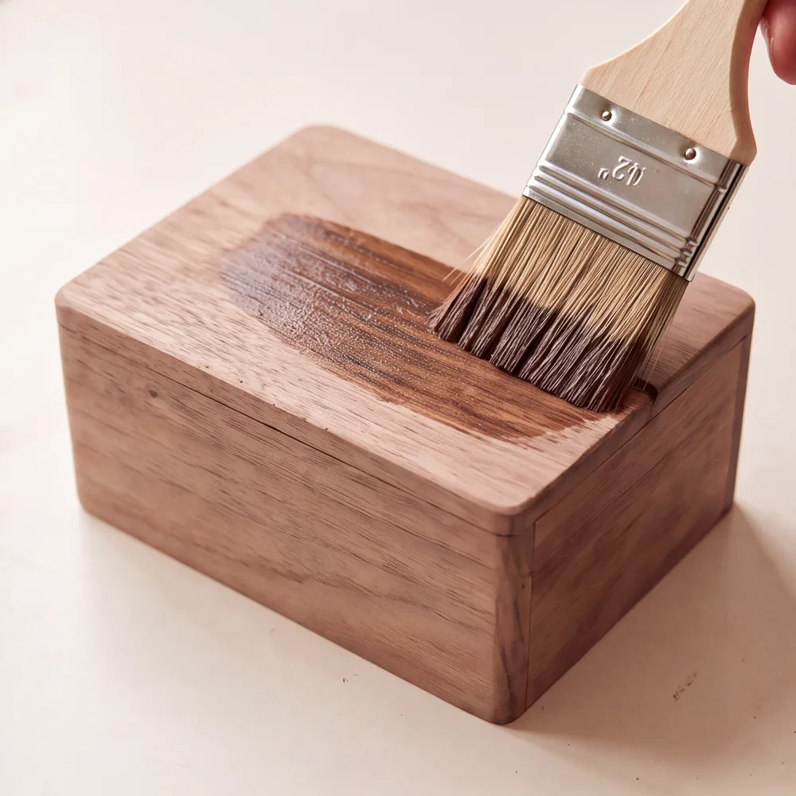

Encre électronique.
Lisible depuis le couloir, sans rétroéclairage ni reflet. L'écran garde son image sans courant et ne consomme que lorsqu'elle change.
Une invention d'Aywen
Vous descendez l'escalier, l'afficheur annonce le prochain métro dans 8 minutes. Vous auriez pu les passer chez vous. Une fois, ce n'est rien. Toute l'année, ça finit par compter.
Ça fait 50 heures par an.1
Lisible depuis le couloir, sans rétroéclairage ni reflet. L'écran garde son image sans courant et ne consomme que lorsqu'elle change.
Coque taillée par un sculpteur à partir du fichier 3D, polie puis vernie. Ou imprimée en PLA, si vous préférez.
Pas de câble au mur, pas de batterie à recharger. L'ESP32 dort entre deux mises à jour.
Des aimants referment la coque. On l'ouvre d'un geste pour changer les piles.
130 × 100 mm de façade. Assez fin pour se faire oublier sur un mur.
Métro, RER, bus, tram et Transilien, grâce aux horaires en temps réel publiés par Île‑de‑France Mobilités.
Une fenêtre aux angles arrondis qui encadre l'écran.
400 × 300 pixels, noir et blanc. Il garde son image sans courant.
Le microcontrôleur Wi‑Fi. Il récupère les passages, calcule l'heure de départ, puis se rendort.
4,5 V en série, ramenés à 3,3 V par le régulateur de l'ESP32.
Quatre pastilles de néodyme, collées par paires.
Massive, polie, vernie. Elle accueille les piles et l'électronique.
Le prototype imprimé, la coque taillée par un sculpteur, le code, puis les normes qui empêchent de le vendre : tout est dans la vidéo d'Aywen.
Les plans, les fichiers 3D, le câblage et le code sont publics. Il faut deux soudures et huit fils.

WROOM‑32
Acheter l'ESP32
Waveshare, SPI
Acheter l'écran
Avec fils
Acheter le support
Alcalines 1,5 V
Acheter les piles
4 à 8 pastilles
Acheter les aimants
Noyer ou PLA
Fichiers 3DCôté outils : fer à souder, pistolet à colle chaude, colle forte et vernis teinte noyer. Les liens d'achat sont affiliés.3
Ce montage demande des bases en électronique. Une erreur de branchement peut griller un composant, voire provoquer un départ de feu. Vous le réalisez sous votre seule responsabilité.
La forme est libre : elle doit contenir l'écran, les piles et l'ESP32. Imprimez-la en 3D, faites-la tailler dans du bois comme l'original, ou recyclez une petite boîte.


Pour fermer sans vis, collez un aimant dans le couvercle et un en face dans la coque. Vérifiez qu'ils s'attirent avant que la colle prenne.
VIN de l'ESP32. Jamais sur 3V3 : 4,5 V, c'est trop pour elle.GND.Retirez toujours les piles avant de brancher l'ESP32 en USB.
Huit fils relient l'écran à l'ESP32. Survolez ou touchez une ligne du tableau pour voir le fil correspondant. Si les couleurs de votre nappe diffèrent, fiez-vous au nom des broches.
| Fil | Écran | ESP32 | Rôle |
|---|
Le brochage peut changer d'une version d'écran à l'autre. Vérifiez dans le manuel du vôtre avant de brancher.
GxEPD2, Adafruit GFX, ArduinoJson (v7), WiFiManager et wolfssl.#define HAVE_SNI dans user_settings.h.ProchainMetro.ino, choisissez la carte « ESP32 Dev Module » et la partition « Minimal SPIFFS », puis téléversez.L'écran se met ensuite à jour chaque minute, la météo tous les quarts d'heure.
Piles et ESP32 au fond de la coque, écran contre la fenêtre avec un peu de colle chaude sur les bords du cadre. Laissez du mou dans les fils pour pouvoir rouvrir, et refermez.
Jamais de colle chaude directement sur l'ESP32 ou sur la nappe de l'écran.
Nouveau Wi‑Fi, nouvelle station ? Ouvrez la coque, retirez les piles, branchez l'ESP32 en USB‑C et refaites les étapes 4 et 5.
Métronome n'est pas vendu : marquage CE, tests en laboratoire et séries minimum de 1 000 pièces le rendent difficile à produire. Dites-le si vous l'achèteriez. C'est ce qui permettra de savoir si une petite série a du sens.
Pas aujourd'hui. Vendre un objet électronique en Europe impose le marquage CE, des tests en laboratoire, une filière de recyclage, et les usines demandent souvent 1 000 unités minimum. Aywen a préféré publier les plans. Inscrivez-vous plus haut si vous le voudriez tout fait.
Partout en Île‑de‑France, pour tout ce que publie PRIM : métro, RER, bus, tram et Transilien. Ailleurs, il faudrait adapter le code à l'API du réseau local.
L'écran ne consomme que lorsqu'il change et l'ESP32 dort entre deux mises à jour. L'autonomie réelle n'est pas encore mesurée ; Aywen donnera son retour d'usage sur Instagram.
Non, le code est prêt : il suffit de le téléverser. Il faut en revanche savoir souder deux fils et brancher une nappe sans se tromper de broche.
Oui. Les réglages permettent de choisir ses terminus, et la vidéo montre une configuration à plusieurs métros, pratique quand on ne part pas dans la même direction.